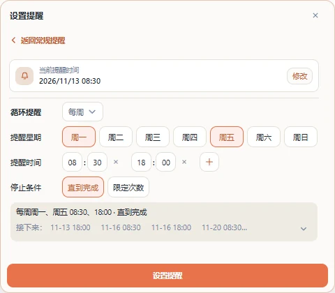
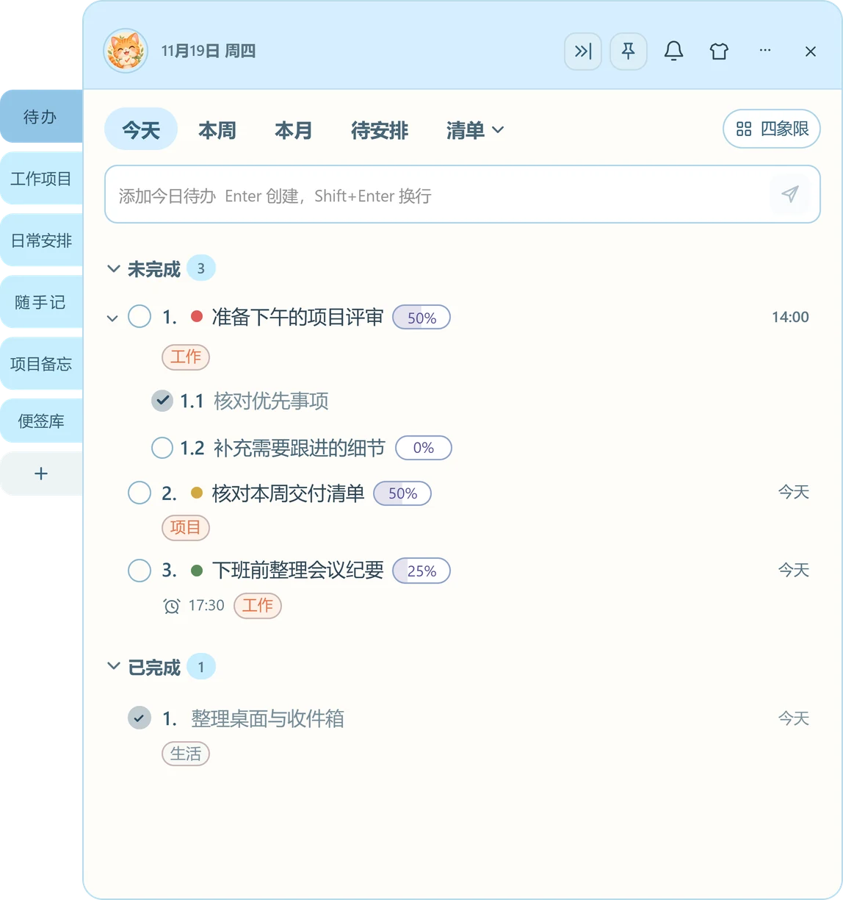
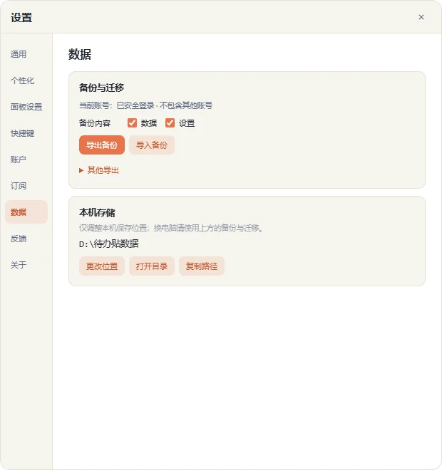

头像 → 设置 → 面板设置 → 贴边方式
把面板贴到习惯的屏幕边缘
先选贴边方式，再开启自动收起。留页签方便切换，完全隐藏让桌面更干净。
- 选择一种贴边方式点击左上角头像，进入「设置 → 面板设置」。选择左侧、右侧或顶部，以及是否保留页签。
- 移动到对应边缘拖动面板顶部空白处，放到目标屏幕的对应边缘。外接显示器时，先移到你要使用的屏幕。
- 开启自动收起点击主面板右上角、图钉左侧的「自动收起」按钮。离开面板后，面板回到边缘。

重新展开：保留页签时点击页签；完全隐藏时，鼠标移到对应屏幕边缘停留。置顶控制窗口层级，与自动收起分别设置。
主面板 → 今天 / 本周 / 本月 / 待安排
想到就记，稍后再整理
- 输入后按 Enter 新建在待办输入框输入标题；Shift + Enter 可以换行。
- 安排日期、提醒和优先级打开待办详情，补充日期、详情备注、标签或子任务。
- 按需要使用文字识别输入日期、时间等内容后，在识别浮层确认采用的字段；也可以取消识别或保留标题原文。

「设置 → 个性化」中可以调整列表排序、自动编号、详情展示等。
主面板 → 清单
把不同项目分开，又随手能找
- 创建清单打开「清单」，选择新建清单并填写名称。
- 将待办放入清单在待办详情设置「所属清单」；无所属清单时为普通待办。
- 固定常用清单在清单管理中点击固定到侧边按钮，生成同名页签。点击页签即可进入该清单。
固定到侧边是同一份清单的入口，不会复制清单或待办。
侧边「＋」→ 新建便签
从随手记，到一张有条理的便签
- 选择普通便签或时间轴便签普通便签适合整理长内容；时间轴便签按时间记录每一条内容。
- 用标题、表格和附件整理资料普通便签中使用格式工具调整标题与正文。通过「＋」插入图片、附件或表格。
- 折叠与关联鼠标悬浮标题时点击左侧箭头折叠章节；通过右侧大纲定位。输入 @ 可以选择待办或便签进行关联。

时间轴记录可以生成待办；不会把整张便签中的全部记录自动变成待办。
待办详情 → 提醒 → 高级提醒
一次提醒，或者按规律循环
- 先选择首次提醒时间在普通提醒页面选择日期、时间；可用的快捷选项会按当前安排日期判断。
- 需要多次提醒时，进入高级提醒设置每天、指定星期、指定月份与日期，或者自定义间隔。可以选择多个提醒时间。
- 确认并保存核对接下来的提醒时间与结束条件，再点击设置提醒。

重复待办用于按规则生成下一次待办；循环提醒用于同一条待办的多次通知，按实际需求分别设置。
主面板「…」→ 日历；或「四象限」
用时间和优先级，看同一份待办
- 日历中看日期安排切换日、周或月，查看对应时间的事项。
- 四象限中看轻重缓急通过主面板的「四象限」按钮进入；在设置中调整显示范围与归类规则。
- 回到列表继续处理视图变化不会生成多份待办，在一处修改后，其他视图查看的是同一条内容。
主面板右上角 → 衣服图标
选皮肤，也调一下面板透明度
- 打开外观设置点击右上角衣服图标，选择喜欢的皮肤。
- 调整透明度通过透明度滑块观察效果，选择自己看得清、也舒服的程度。
- 字体大小单独设置在「设置 → 面板设置」调整字体、正文字号和界面字号。

头像 → 设置 → 数据
重要内容，记得留一份备份
- 先导出备份在数据页面选择导出备份，把文件保存到便于找到的位置。
- 换机或恢复时导入使用应用内导入入口，先核对说明再进行恢复。
- 面板找不到时先点击系统托盘中的待办贴图标。也可在「面板设置」恢复默认大小和位置。

本机保存不等于自动云端备份。重装系统或清理磁盘前，请先把重要备份放到其他安全位置。